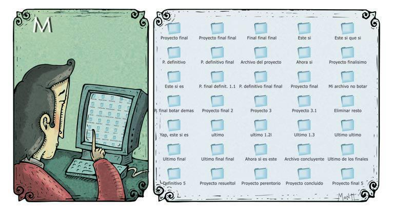
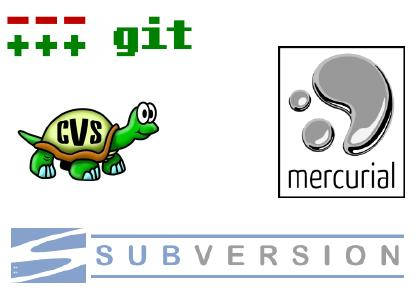

Control de versiones
Gestión de cambios sobre los elementos de algún producto o una configuración del mismo.
Presenter Notes
Aspecto relacionado con la gestión de configuración dentro de la ingeniería de software Una versión o revisión de un producto, es el estado en el que se encuentra dicho producto en un momento dado de su desarrollo o modificación. -> Aunque un sistema de control de versiones puede realizarse de forma manual,
Control de versiones manual

Presenter Notes
Es muy aconsejable disponer de herramientas que faciliten esta gestión dando lugar a los llamados sistemas de control de versiones o SVC (del inglés System Version Control).
Qué es un SCV?
Software para gestionar el historial de versiones de un proyecto.
Presenter Notes
Estos sistemas facilitan la administración de las distintas versiones de cada producto desarrollado, así como las posibles especializaciones realizadas.
Ventajas de un SCV
- Copias de seguridad
- Deshacer cambios
- Historial de cambios
- Diferentes versiones del proyecto
Presenter Notes
3 Que, Como, Quien, Cuando hizo un cambio
Cuando usar un SCV
- Trabajos,
- Tesis,
- Documentación,
- Traducciones,
- Software
- ...
- Trabajando en equipo
- Trabajando solo
Presenter Notes
Cuando se comienza a usar un SCV se tiene la sensación de "Como pude trabajar antes sin esto?"
Algunos SCV

Presenter Notes
Caracterización
- Formas de colaborar
- Exclusiva
- Colaborativa
- Flujos de trabajo
- Centralizado
- Gestor de Integraciones
- Dictador y Tenientes
- Arquitecturas de almacenamiento
- Centralizados
- Distribuidos
Presenter Notes
Centralizados

Presenter Notes
Distribuidos

Presenter Notes
Terminología
Estructurales
- Repository, Working copy, Working version, Workspace
Conceptuales
- Trunk, Branch, Tag
- Tip, Head
- Revision, Change, Changelist
- Stage
Dependiendo del SCV pueden encontrarse en distintas partes
Acciones
- Checkout, Commit, Export, Import
- Conflict, Resolve, Merge, Rebase
- Cherry Pick, Revert, Stash, Patch
- Fork, Clone, Push, Pull
Muchos se traducen en comandos de los distintos SCV
Presenter Notes
La copia de trabajo es la copia local de los ficheros de un repositorio, en un momento del tiempo o revisión específicos. Todo el trabajo realizado sobre los ficheros en un repositorio se realiza inicialmente sobre una copia de trabajo, de ahí su nombre. Conceptualmente, es un cajón de arena o sandbox. Versión determinada de la información que se gestiona. Hay sistemas que identifican las revisiones con un contador. Hay otros sistemas que identifican las revisiones mediante un código de detección de modificaciones (Ej. Git usa SHA1). A la última versión se le suele identificar de forma especial con el nombre de HEAD. Para poner especial a una revisión concreta se usan los rótulos o tags La línea principal de desarrollo, donde se llevan a cabo los cambios menos complejos del día a día. Idealmente debería poder compilarse y pasar todas las pruebas en todo momento (ver Integración continua). La persona que rompa la compilación, debe ser públicamente humillada, y debe pagar una penitencia en donuts Cuando se van a llevar a cabo cambios importantes que romperán la compilación, pruebas, experimentos o intentos de optimización, debe crearse una nueva rama de desarrollo, con la que no molestemos a los compañeros, esto es un branch: una copia del código o la rama de la que deriva. En esta copia haremos nuestros cambios, integraremos los arreglos que puedan haberse ido haciendo en el trunk, y, una vez terminado el desarrollo en la rama, integraremos (o no) los cambios en el trunk. También puede crearse una rama para una versión terminada, hacer mantenimiento de esta versión sobre esta rama, y continuar el desarrollo de la nueva versión en el trunk. Etiquetas que sirven para identificar un cierto momento en el desarrollo que queremos preservar. Se utilizan habitualmente para marcar cambios de versión (alfas, betas, RC, RTM) y puntos de interés. Sobre un tag no se puede / no se debe hacer cambios The latest version in a branch. Synonym for “tip”; the latest version in a branch. This term tends to be used more when you're talking about the trunk, “tip” more when you're talking about a non-trunk branch. Un despliegue crea una copia de trabajo local desde el repositorio. Se puede especificar una revisión concreta, y por defecto se suele obtener la última. Un commit sucede cuando una copia de los cambios hechos a una copia local es escrita o integrada sobre repositorio. Un cambio representa una modificación específica a un documento bajo control de versiones. La granularidad de la modificación considerada un cambio varía entre diferentes sistemas de control de versiones. En muchos sistemas de control de versiones con commits multi-cambio atómicos, una lista de cambios identifica el conjunto de cambios hechos en un único commit. Esto también puede representar una vista secuencial del código fuente, permitiendo que el fuente sea examinado a partir de cualquier identificador de lista de cambios particular. Una integración o fusión une dos conjuntos de cambios sobre un fichero o un conjunto de ficheros en una revisión unificada de dicho fichero o ficheros.
GIT
Sistema de control de versiones distribuido, diseñado y desarrollado por Linus Torvalds para el kernel Linux.
"I'm an egotistical bastard, and I name all my projects after myself. First 'Linux', now 'git'."
Presenter Notes
Fuentes
- http://es.wikipedia.org/wiki/Control_de_versiones
- http://git-scm.com/book
- http://www.blog.sergiorus.com/post/968247237/git-sistema-de-control-de-versiones-distribuido